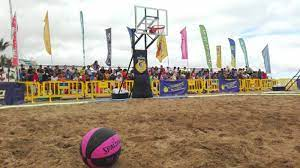
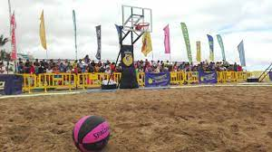

Basquetbol
En el baquetbol cada equipo tiene una canasta, la cual debe defender. El objetivo de los jugadores es llevar la pelota a la canasta del equipo contrario y tirarla dentro para anotar puntos. La pelota se debe mover por la cancha con rebotes o lanzamientos que pueden ser de pase o para anotar.El básquetbol es uno de los deportes más practicados en la actualidad por equipos de hombres y mujeres, tanto de forma profesional como amateur. La liga más reconocida de básquetbol es la NBA, una liga privada estadounidense en la que juegan equipos como Los Angeles Lakers y los Chicago Bulls. Además, existen otras variantes de este deporte, como baloncesto en silla de ruedas, el streetball y el baloncesto 3×3.
La Federación Internacional de Baloncesto (FIBA) es el ente regulador de la práctica de este deporte en el mundo entero y la encargada de organizar competiciones oficiales. El básquetbol es deporte olímpico desde 1936.
Fuente: https://concepto.de/basquetbol/#ixzz8183hgL4R
Variantes del basquetbol
Basquetbol acuatico
Waterbasket es un deporte acuático, que mezcla las normas del baloncesto y el waterpolo y se juega en una piscina. Los equipos constan de cinco jugadores cada uno, deben disparar a meta como todo juego de pelota dentro de un cierto tiempo de posesión. Es un juego poco jugado.
En EE. UU., Brasil, y Europa, se organizan algunos partidos para desarrollar este deporte.
En 2005, la Federación Italiana de Baloncesto lo reconoció como una modalidad del mismo.
En los Países Bajos, se practica el waterbasket desde la década de 1970. Además de los torneos regulares, también se organiza un campeonato nacional donde los mejores equipos compiten por el campeonato oficial nacional de Waterbasket. Un deporte poco conocido es el waterbasket. Como su propio nombre indica este deporte es la fusión entre el baloncesto y el waterpolo y se practica dentro de una piscina.
Basketplaya

El Basket Playa es una evolución del baloncesto pero en nuevo entorno de juego.
La arena pasa a ser un elemento fundamental y la playa un marco único.
La actividad consiste en partidos de baloncesto en la arena, con la dificultad que tiene el bote en esta superficie. Por este motivo, y ante la imposibilidad de driblar, el “pasar y cortar” se convierte en la principal forma de desmarcarse del contrario.
La técnica individual de dominio de balón pasa a un segundo plano, facilitando la práctica al igualarse los niveles de los participantes.
Slamball
Slamball es un derivado del baloncesto jugado con cuatro trampolines o camas elásticas frente a cada red. Es un deporte de contacto en el que el campo de juego está rodeado por paneles al estilo de los campos de hockey sobre hielo.
Son partidos de cuatro contra cuatro. Los equipos se componen de: Un Handler, que se encarga de subir el balón y distribuir el juego, dos Gunners, que son los encargados de hacer que el balón entre y un Stopper, que defiende dentro del área de tres, situado en la cama elástica debajo del aro. Puede encestar cualquiera de los integrantes del equipo.
¿Conocías alguna de estas variantes? ¿Cuál te ha llamado más la atención?
Ligas y equipos de baloncesto
NBA
La National Basketball Association, más conocida simplemente por sus siglas NBA, es una liga privada de baloncesto profesional que se disputa en Estados Unidos desde 1949, cuando se fusionaron las ligas profesionales National Basketball League (NBL, creada en 1937) y la Basketball Association of America (BAA, fundada en 1946). Al ser una entidad privada, no depende oficialmente de la Federación Estadounidense de Baloncesto. Los jugadores de la NBA están autorizados a competir internacionalmente tras un acuerdo especial a tres bandas firmado entre la Federación Internacional de Baloncesto (FIBA) —máximo organismo a nivel mundial—, la propia NBA y la Federación Estadounidense en 1989.
La NBA se divide en 2 conferencias: Este y Oeste, se juegan los "playoffs" y 2 equipos
clasifican a la final de la conferencia, luego de ganar la final el equipo se
enfrenta al equipo ganador de la conferencia opuesta.
Aqui hay una lista de los equipos en la NBA:
(CONFERENCIA ESTE)
Boston Celtics
New Jersey Nets
New York Knicks
Philadelphia 76ers
Toronto Raptors
Chicago Bulls
Cleveland Cavaliers
Detroit Pistons
Indiana Pacers
Milwaukee Bucks
Atlanta Hawks
Charlotte Hornets
Miami Heat
Orlando Magic
Washington Wizards
(CONFERENCIAOESTE)
Denver Nuggets
Minnesota Timberwolves
Oklahoma City Thunder
Portland Trail Blazers
Utah Jazz
Golden State Warriors
Los Angeles Clippers
Los Angeles Lakers
Phoenix Suns
Sacramento Kings
Dallas Mavericks
Houston Rockets
Memphis Grizzlies
New Orleans Pelicans
San Antonio Spurs
Los mejores jugadores:
15. Shai Gilgeous-Alexander, Thunder
14. Donovan Mitchell, Cavaliers
13. Zion Williamson, Pelicans
12. Jimmy Butler, Heat
11. Anthony Davis, Lakers
10. LeBron James, Lakers
9. Devin Booker, Suns
8. Ja Morant, Grizzlies
7. Joel Embiid, 76ers
6. Jayson Tatum, Celtics
5. Luka Doncic, Mavericks
4. Kevin Durant, Nets
3. Nikola Jokic, Nuggets
2. Stephen Curry, Warriors
1. Giannis Antetokounmpo, Bucks

MUCHAS GRACIAS
En el baquetbol cada equipo tiene una canasta, la cual debe defender. El objetivo de los jugadores es llevar la pelota a la canasta del equipo contrario y tirarla dentro para anotar puntos. La pelota se debe mover por la cancha con rebotes o lanzamientos que pueden ser de pase o para anotar.El básquetbol es uno de los deportes más practicados en la actualidad por equipos de hombres y mujeres, tanto de forma profesional como amateur. La liga más reconocida de básquetbol es la NBA, una liga privada estadounidense en la que juegan equipos como Los Angeles Lakers y los Chicago Bulls. Además, existen otras variantes de este deporte, como baloncesto en silla de ruedas, el streetball y el baloncesto 3×3. La Federación Internacional de Baloncesto (FIBA) es el ente regulador de la práctica de este deporte en el mundo entero y la encargada de organizar competiciones oficiales. El básquetbol es deporte olímpico desde 1936. Fuente: https://concepto.de/basquetbol/#ixzz8183hgL4R
Variantes del basquetbol
Basquetbol acuatico
Waterbasket es un deporte acuático, que mezcla las normas del baloncesto y el waterpolo y se juega en una piscina. Los equipos constan de cinco jugadores cada uno, deben disparar a meta como todo juego de pelota dentro de un cierto tiempo de posesión. Es un juego poco jugado. En EE. UU., Brasil, y Europa, se organizan algunos partidos para desarrollar este deporte. En 2005, la Federación Italiana de Baloncesto lo reconoció como una modalidad del mismo. En los Países Bajos, se practica el waterbasket desde la década de 1970. Además de los torneos regulares, también se organiza un campeonato nacional donde los mejores equipos compiten por el campeonato oficial nacional de Waterbasket. Un deporte poco conocido es el waterbasket. Como su propio nombre indica este deporte es la fusión entre el baloncesto y el waterpolo y se practica dentro de una piscina.
Basketplaya
El Basket Playa es una evolución del baloncesto pero en nuevo entorno de juego. La arena pasa a ser un elemento fundamental y la playa un marco único. La actividad consiste en partidos de baloncesto en la arena, con la dificultad que tiene el bote en esta superficie. Por este motivo, y ante la imposibilidad de driblar, el “pasar y cortar” se convierte en la principal forma de desmarcarse del contrario. La técnica individual de dominio de balón pasa a un segundo plano, facilitando la práctica al igualarse los niveles de los participantes.
Slamball
Slamball es un derivado del baloncesto jugado con cuatro trampolines o camas elásticas frente a cada red. Es un deporte de contacto en el que el campo de juego está rodeado por paneles al estilo de los campos de hockey sobre hielo. Son partidos de cuatro contra cuatro. Los equipos se componen de: Un Handler, que se encarga de subir el balón y distribuir el juego, dos Gunners, que son los encargados de hacer que el balón entre y un Stopper, que defiende dentro del área de tres, situado en la cama elástica debajo del aro. Puede encestar cualquiera de los integrantes del equipo.
¿Conocías alguna de estas variantes? ¿Cuál te ha llamado más la atención?
Ligas y equipos de baloncesto
NBA
La National Basketball Association, más conocida simplemente por sus siglas NBA, es una liga privada de baloncesto profesional que se disputa en Estados Unidos desde 1949, cuando se fusionaron las ligas profesionales National Basketball League (NBL, creada en 1937) y la Basketball Association of America (BAA, fundada en 1946). Al ser una entidad privada, no depende oficialmente de la Federación Estadounidense de Baloncesto. Los jugadores de la NBA están autorizados a competir internacionalmente tras un acuerdo especial a tres bandas firmado entre la Federación Internacional de Baloncesto (FIBA) —máximo organismo a nivel mundial—, la propia NBA y la Federación Estadounidense en 1989.
La NBA se divide en 2 conferencias: Este y Oeste, se juegan los "playoffs" y 2 equipos clasifican a la final de la conferencia, luego de ganar la final el equipo se enfrenta al equipo ganador de la conferencia opuesta.
Aqui hay una lista de los equipos en la NBA:
(CONFERENCIA ESTE) Boston Celtics New Jersey Nets New York Knicks Philadelphia 76ers Toronto Raptors Chicago Bulls Cleveland Cavaliers Detroit Pistons Indiana Pacers Milwaukee Bucks Atlanta Hawks Charlotte Hornets Miami Heat Orlando Magic Washington Wizards (CONFERENCIAOESTE) Denver Nuggets Minnesota Timberwolves Oklahoma City Thunder Portland Trail Blazers Utah Jazz Golden State Warriors Los Angeles Clippers Los Angeles Lakers Phoenix Suns Sacramento Kings Dallas Mavericks Houston Rockets Memphis Grizzlies New Orleans Pelicans San Antonio Spurs
Los mejores jugadores:
15. Shai Gilgeous-Alexander, Thunder
14. Donovan Mitchell, Cavaliers
13. Zion Williamson, Pelicans
12. Jimmy Butler, Heat
11. Anthony Davis, Lakers
10. LeBron James, Lakers
9. Devin Booker, Suns
8. Ja Morant, Grizzlies
7. Joel Embiid, 76ers
6. Jayson Tatum, Celtics
5. Luka Doncic, Mavericks
4. Kevin Durant, Nets
3. Nikola Jokic, Nuggets
2. Stephen Curry, Warriors
1. Giannis Antetokounmpo, Bucks